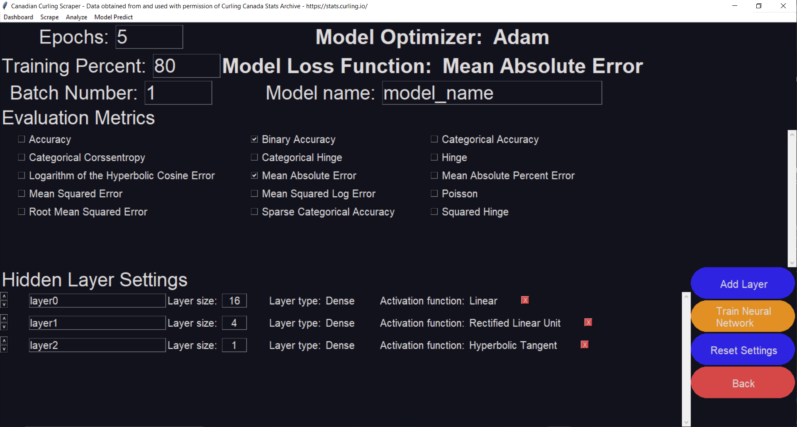
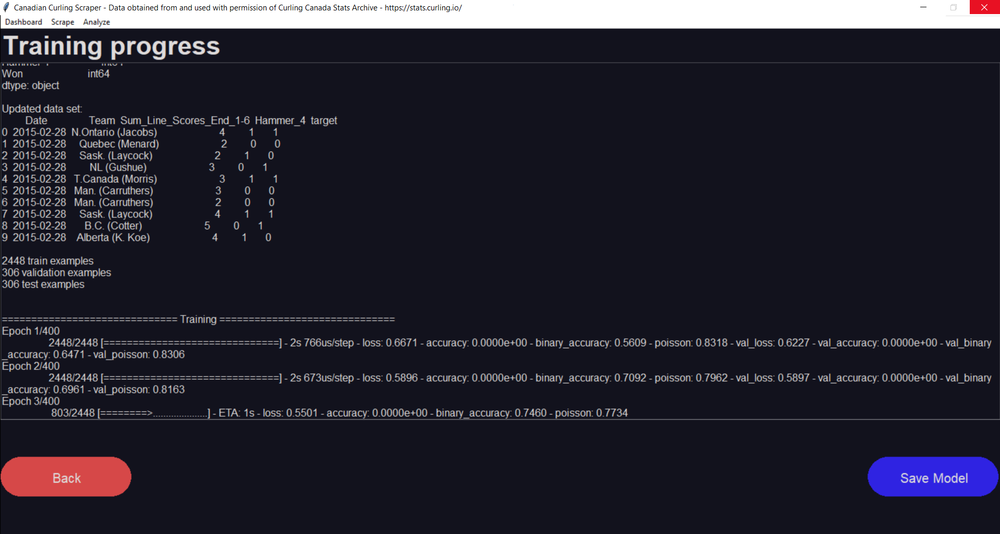
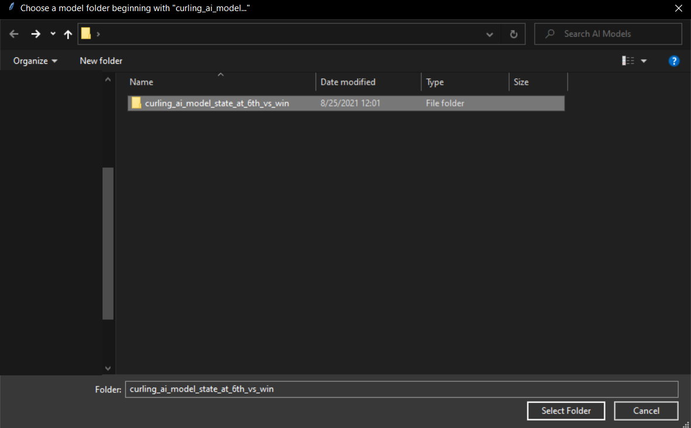
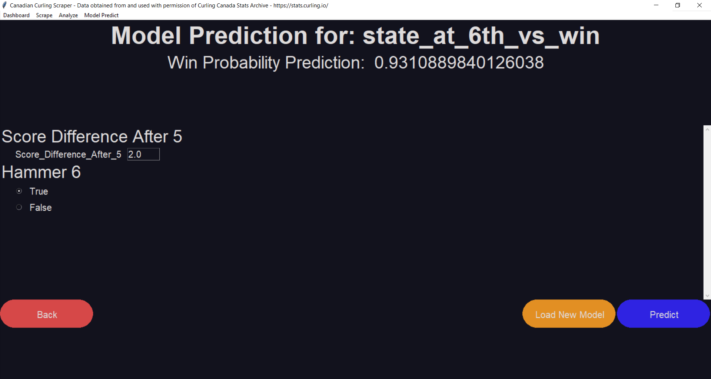
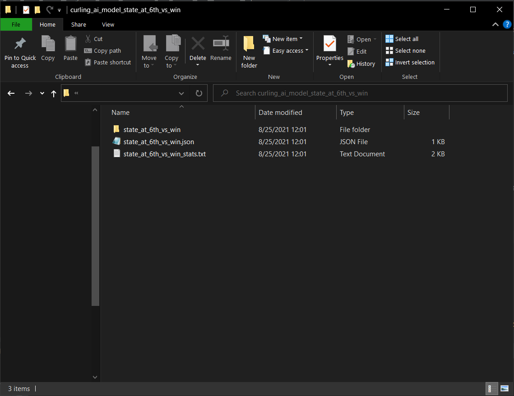
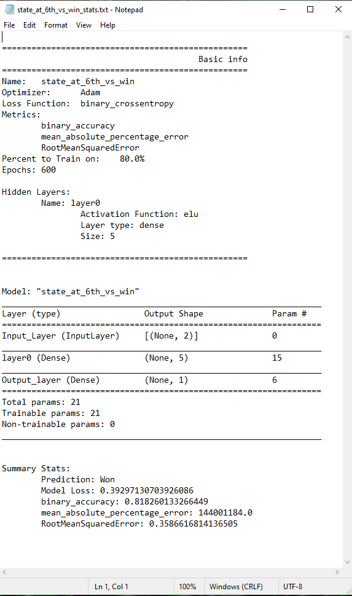

This program allows for scrapping data from Canadian National curling championships
dating back to the 1928 MacDonald Brier. Additionally, users can customize their data
sets and preview them before exporting to a CSV file format.
Version 02.00.00: Fixed bug issues related to creating neural network models. Models are
saved with more extensive statistics and can be loaded into the program to make predictions. Long
drop-down menus are displayed alphabetically to improve navigation
Version 01.00.00: Initial stable release. Includes neural network model training and saving.
Version 00.01.20: Various bug fixes for retrieving CSV data.
Version 00.01.10: Hotfix for function adding in the analysis section.
Version 00.01.00: Initial Beta Release.
By clicking “Scrape” in the top left toolbar users can choose to scrape only years
of data that are not on file, or scrape all new data in case of database changes or
updates. Users can choose one of 5 professional curling tournaments:
After choosing the tournament and years, users can see progress updated from
the scrape while they wait for it to complete. After the data is on file locally,
summary statistics can be viewed for each tournament and year on the main screen
dashboard.


By clicking “Analyze” in the top Left toolbar users can choose a tournament
and year range of data that they would like to analyze.


If the independent variable you need is not present, “Add Option” can
be clicked on to add new variables. A new window will pop up presenting you with options to add
custom data variables. Dropdown menus are available showing available functions, special states
(winner, loser, red, yellow, etc.), and data elements to be used. Any previously created data variable can
be used as an input for the data selection.

Additionally, if line scores are selected as a data element the ends necessary will need to be specified.
To export your data to a CSV, click the green “To CSV” button in the bottom right. The data set will be
cleaned by removing any records that do not match the expected values for each data field, and a file dialogue
window will be launched to permit you to save the file in your desired location.

In this menu, you can customize the setting for a neural network that will be trained on the data set that
you just created. The dependent variable that you selected while customizing your data will be used as the
“target” for the model (ie. the thing that it will try to predict in the output layer), while the other data
elements will be put into the input layer and used to predict the target. At the top of the screen are
overarching settings for your model.
Below those, there are the hidden layer settings. Hidden layers are processing steps
that are sandwiched between the input and output layers. The layers are processed
sequentially from the top to the bottom. You can add, move, edit, or delete layers as
you wish. The model can have none, one, or many hidden layers.

After hitting “Train Neural Network” on the settings screen, the dataset you created will
be cleaned and both it and your settings will be used to create and train a neural
network. While training, progress updates will be displayed on the screen.
After your model has finished training, you have the option to save it for later. After clicking
“Save Model”, you will select the directory that you would like your models to be saved in. A
folder with your model’s name will be created in that directory.
By clicking “Model Predict” on the menu bar, you will be prompted to pick the folder
of the model that you would like to make predictions from. Make sure that the folder you
select has the header “curling_ai_model_” because all files in that folder are required.

Once the model loads, you can input values and select different variables to make predictions on the trained model. Your most recent prediction will appear on the
top of the screen.

If you look inside the “curling_ai_model_” you’ll find the files that describe the
saved model. By opening the stats text file, you can see the settings that were used
to train the model, its layer structure, what it was trying to predict, and the results
of its evaluation metrics.

